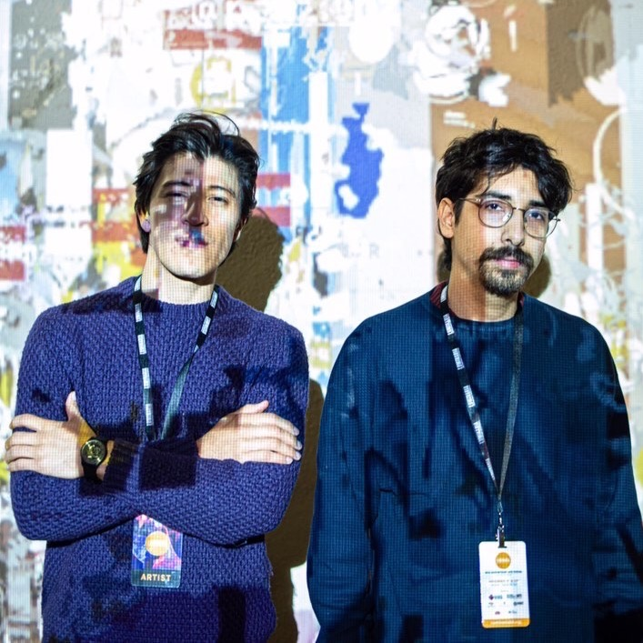

<div class="content">
  <div class="about">
    <p style="text-align: center;">
      
    </p>
    <p>
      PHAGES is an artist collective of two creative coding artists,
      <a href="#" style="text-decoration: none; color: orange;">Juan Flores</a>
      and
      <a href="#" style="text-decoration: none; color: orange;">Isaac Medina</a
      >. The start of our collaboration started in late 2016 in Mexico City when
      we began doing coding intensive audio-visual performances in various
      places in the city like at The Department of Music at the National
      Autonomous University of Mexico, the Cultural Center of Spain (MX), as
      well as small house gallery shows. We later on began to branch out in the
      US to be featured artists at Connecticut College's Ammerman Center for
      Arts and Technology Biennial Simposium (New London, CT) in 2018, and
      Luminaria Contemporary Arts Festival (San Antonio, TX) in 2019. Today we
      continue to work digitally and submit projects in physical places globally
      as well as in corners of the digital space.
    </p>
  </div>
</div>
